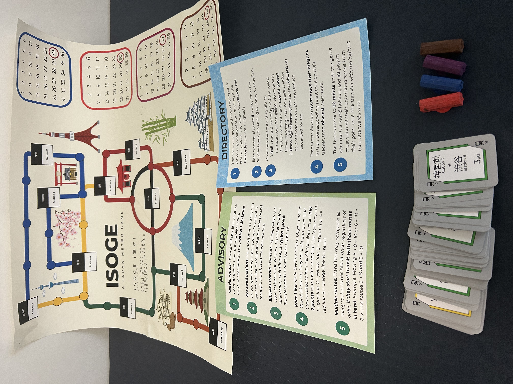
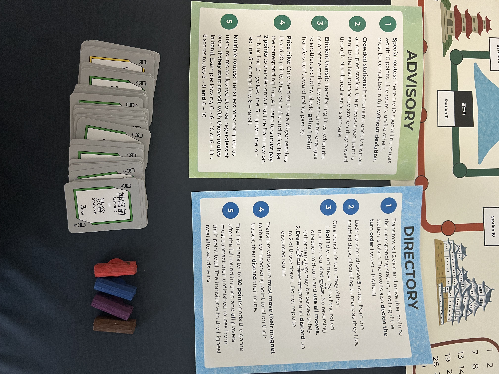

ISOGE 急げ
/I-SO-GE/ : imperative form of ISOGU (急ぐ), "to hurry"
Solo project | Analog racing game, wall-mounted poster | Players: 4

ISOGE is a solo analog racing game I designed for Advanced Game Design, played on a large-format poster mounted to the wall. Players are commuters racing across a stylized map of Japan, moving magnetic train tokens between twelve stations connected by five color-coded lines, completing route cards, and racing to 30 points, with everyone penalized at the end for any routes they didn't finish.
I grew up in Tokyo where the train was just daily life, and what always struck me was how everyone was using the exact same network in completely different ways, all constantly in each other's way. That's the game. The board is designed to look like an actual transit map, which is why it's mounted to the wall rather than laid flat on a table — that's where metro maps live. I designed it in Adobe Illustrator with twelve stations and landmark illustrations across the map, with magnetic train tokens that cling directly to the poster. Everything was fabricated at the Harvey Mudd Makerspace and Scripps Fab Lab.
Photos

